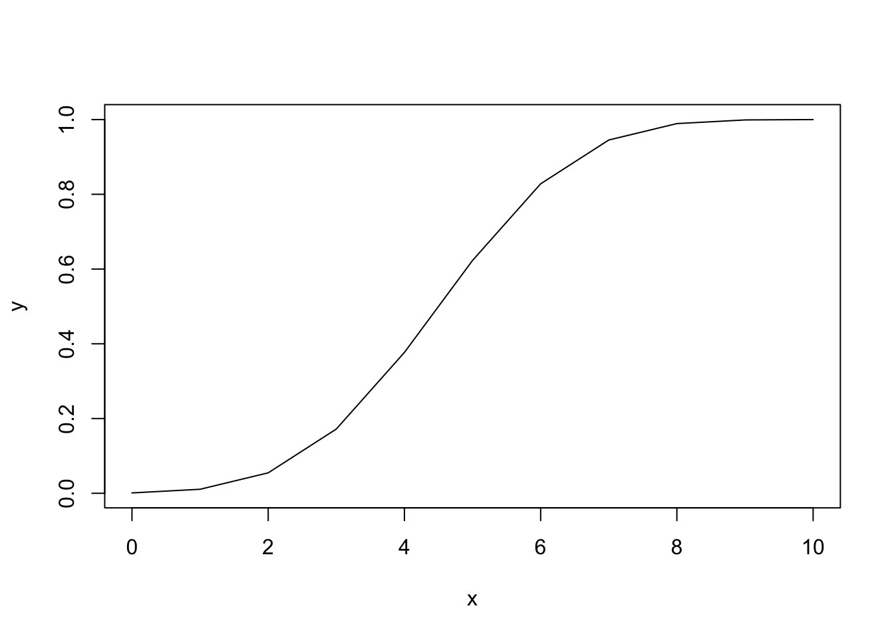
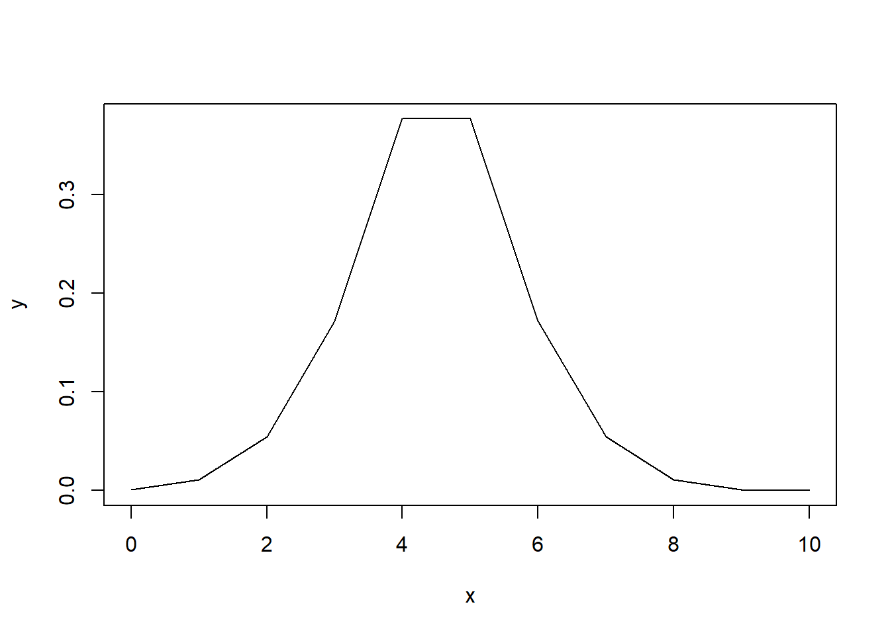
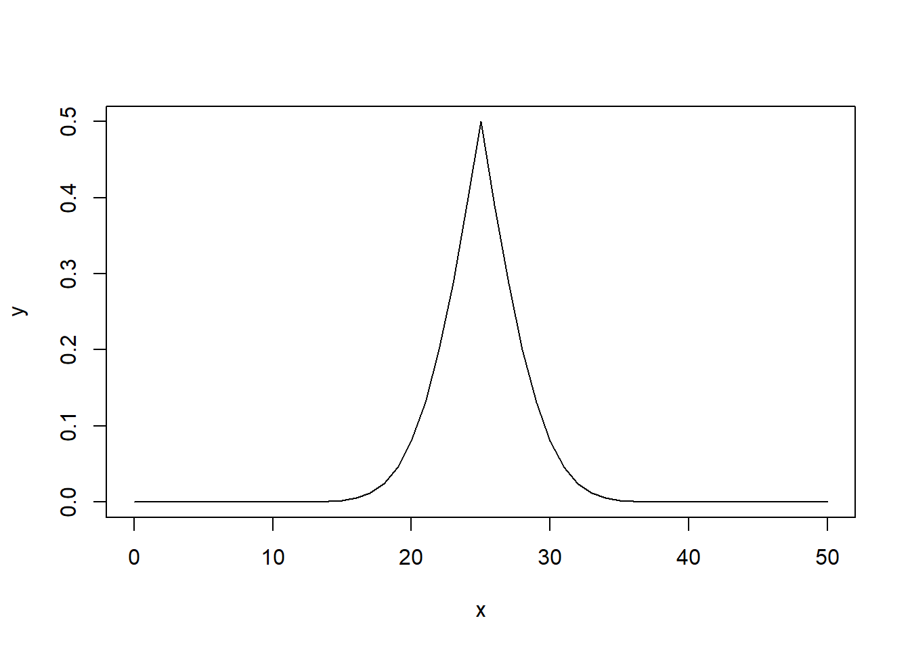
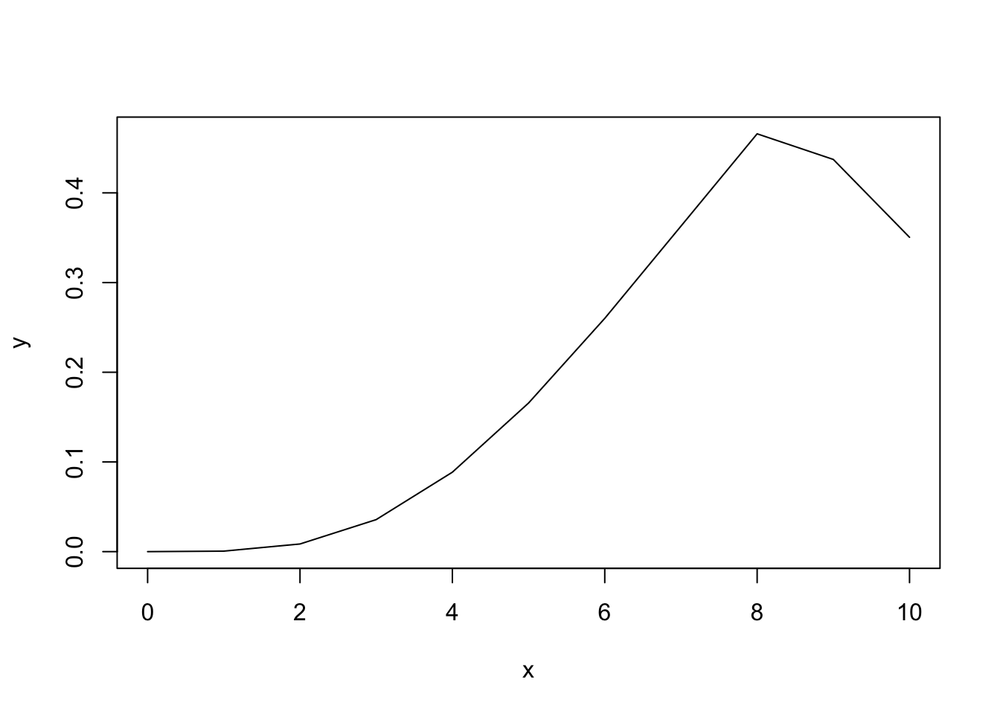

x <- pbinom(q = 9, # number successes, 9 heads
size = 10, # number of trials, 10 flips
prob = 0.5) # probability with a fair coin
round(x,4)[1] 0.999We rely on multiple different probability distributions to help us understand what probable outcomes are for a specific scenario. All of the tests that we are performing are comparing our results to what we would expect under perfectly random scenarios. For example, if we are flipping a coin, we are interested in whether the the observation we have of the flips on our coin matches our expectation given the probability of getting heads or tails on a perfectly fair coin. While it is possible to get all heads or all tails on a coin flip, it is highly unlikely and may lead us to believe we have an unfair coin. The more trails we perform, the more confident we can be that out coin is atypical.
We perform similar comparisons for other distributions. If we are comparing sets of events, we can look at the probability of those events occurring if events are occurring randomly. If we are comparing counts, we can compare our counts to our expectation of counts if events or subjects are distributed randomly throughout the matrix or whether two sets of counts are likely under the same sets of assumptions.
Remember, for our specific tests, we are setting an \(\alpha\) value in advance (traditionally \(0.05\), or \(5\)%) against which we compare our \(p\) value, with \(p\) representing the probability of observing an event as extreme or more extreme than the event we observe given a specific probability distribution.
Previously, we talked about the normal distribution, which is used to approximate a lot of datasets in nature. However, several other probability distributions are also useful for biological systems, which are outlined here.
A binomial distribution is one in which only two outcomes are possible - often coded as \(0\) and \(1\) and usually representing failure and success, respectively. The binomial is described by the following function:
\[ p(x)=\binom{n}{x}p^{x}(1-p)^{n-x} \]
where \(n =\) number of trials, \(x =\) the number of successes, and \(p =\) the probability of a success under random conditions.
In R, the binomial distribution is represented by the following functions:
dbinom: the density of a binomial distribution
pbinom: the distribution function, or the probability of a specific observation
qbinom: the value at which a specific probability is found (the quantile function)
rbinom: generates random values according to a binomial.
Let’s see what this looks like. Let’s consider a scenario where we flip a coin 10 times and get 9 heads. How likely is this outcome?
x <- pbinom(q = 9, # number successes, 9 heads
size = 10, # number of trials, 10 flips
prob = 0.5) # probability with a fair coin
round(x,4)[1] 0.999NOTE that the trailing \(0\) is dropped, such that the real answer is \(0.9990\). However, we mentioned before that the \(p\) value should be the probability of a result as extreme or more extreme, meaning that it should always be less than \(0.5\). If we are reporting a value of greater than \(0.5\), then we are comparing to the upper tail of the distribution. For a one-tailed \(\alpha\) of \(0.05\), this would mean that we are looking for a value greater than \(0.95\) (\(1-\alpha\)).
So, our real \(p\) is:
1-round(x,4)[1] 0.001Again, the trailing zero is missing. Given that \(p < \alpha\), we reject the null hypothesis that this is a fair coin.
How does this distribution look?
# number of successes
# start at 0 for no heads
x <- 0:10
# cumulative probability to left of outcome
y <- pbinom(x,size = 10, prob = 0.5, lower.tail = T)
# cumulative probability of results to the left
plot(x,y,
type="l") # line plot
What about if we always have \(p\) less than \(0.5\) to reflect two tails?
# any value greater than 0.5 is subtracted from 1
y[y > 0.5] <- 1 - y[y > 0.5]
plot(x,y,type="l")
What if we do this with a bigger dataset, like for \(50\) flips?
# number of successes
# start at 0 for no heads
x <- 0:50
# cumulative probability to left of outcome
y <- pbinom(x,size = length(x), prob = 0.5, lower.tail = T)
# any value greater than 0.5 is subtracted from 1
y[y > 0.5] <- 1 - y[y > 0.5]
plot(x,y,type="l")
As we increase the number of flips, we can see that the probability of success forms a normal distribution centered on the outcome given the default probability. Thus, as we deviate from our expected outcome (initial probability multiple by the number of trials), then our results become less likely.
The Poisson distribution is used to reflect random count data. Specifically, the Poisson is used to determine if success events are overdispersed (i.e., regularly spaced), random, or underdispersed (i.e., clustered). The Poisson introduces the variable lambda (\(\lambda\)) which represents the mean (\(\mu\)) and the variance (\(\sigma^2\)), which are equal in a Poisson distribution. A Poisson distribution is described by the following function:
\[ p(x)=\frac{\lambda^{x}e^{-\lambda}}{x!} \]
The Poisson is represented by the following functions in R which closely resemble the functions for the normal and binomial distributions:
dpois: the log density function
ppois: log distribution (probability) function
qpois: quantile function
rpois: random values from a Poisson.
Let’s look at the probability of \(0\) to \(10\) successes when we have our \(\lambda=1\).
x <- 0:10
y <- ppois(x,lambda = 1)
# any value greater than 0.5 is subtracted from 1
y[y > 0.5] <- 1 - y[y > 0.5]
plot(x,y,type="l")
As we can see, the probability of rare events is high, whereas the probability quickly decreases as the number of successes increases.
\(\chi^2\)-squared (pronounced “kai”, and spelled “chi”) is a distribution used to understand if count data between different categories matches our expectation. For example, if we are looking at students in the class and comparing major vs. number of books read, we would expect no association, however we may find an association for a major such as English which required reading more literature. The \(\chi^2\) introduces a new term degrees of freedom (\(df\)) which reflects the number of individuals in the study. For many tests, \(df\) are needed to reflect how a distribution changes with respect the number of individuals (and amount of variation possible) within a dataset. The equation for the \(\chi^2\) is as follows, with the \(\chi^2\) being a special case of the gamma (\(\gamma\) or \(\Gamma\)) distribution that is affected by the \(df\), which is defined as the number of rows minus one multiplied by the number of columns minus one \(df = (rows-1)(cols-1)\):
\[ f_n(x)=\frac{1}{2^{\frac{n}{2}}\Gamma(\frac{n}{2})}x^\frac{n}{2-1}e^\frac{-x}{2} \]
The \(\chi^2\)-squared distribution is also represented by the following functions, which perform the same things as the previous outlined equivalents for Poisson and binomial:
dchisq
pchisq
qchisq
rchisq
We can view these probabilities as well:
x <- 0:10
y <- pchisq(x, df = 9)
# any value greater than 0.5 is subtracted from 1
y[y > 0.5] <- 1 - y[y > 0.5]
plot(x,y,type="l")
We evaluate \(\chi^2\) tests by calculating a \(\chi^2\) value based on our data and comparing it to an expected \(\chi^2\) distribution. This test statistic can be evaluated by looking at a \(\chi^2\) table or by using R. Note that you need to know the degrees of freedom in order to properly evaluate a \(\chi^2\) test. We calculate our test statistic as follows:
\[ \chi^2=\Sigma\frac{(o-e)^2}{e} \]
where \(e =\) the number of expected individuals and \(o =\) the number of observed individuals in each category. Since we are squaring these values, we will only have positive values, and thus this will always be a one-tailed test.
Usually when we use a \(\chi^2\), we are looking at count data. Let’s consider the following hypothetical scenario, comparing experience with R between English majors (who, in this theoretical scenario, do not regularly use R) and Biology majors who are required to take R for this class:
| Major | R experience | No R experience |
|---|---|---|
| English | 2 | 8 |
| Biology | 9 | 1 |
Intuitively, we can see a difference, but we want to perform a statistical test to see just how likely these counts would be if both groups were equally likely to use R:
chisq.test(x = c(2,8),
y = c(9,1))Warning in chisq.test(x = c(2, 8), y = c(9, 1)): Chi-squared approximation may
be incorrect
Pearson's Chi-squared test with Yates' continuity correction
data: c(2, 8) and c(9, 1)
X-squared = 0, df = 1, p-value = 1Here we get \(p = 1\), which reflects a one-tailed interpretation.
To be completed; involves calculations on smaller datasets.